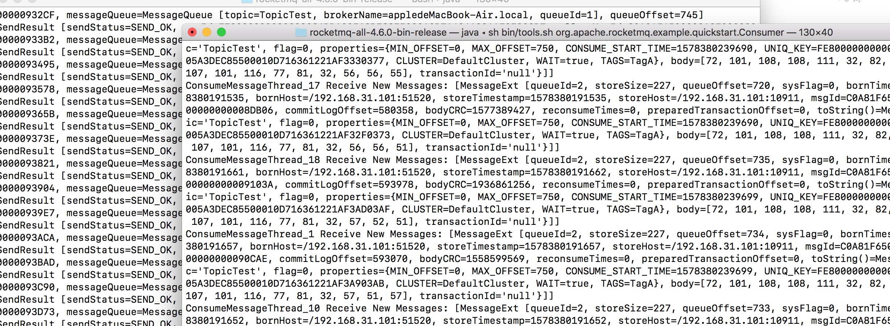

- 00 开篇导读.md.html
- 01 以真实“商场停车”业务切入——需求分析.md.html
- 02 具象业务需求再抽象分解——系统设计.md.html
- 03 第一个 Spring Boot 子服务——会员服务.md.html
- 04 如何维护接口文档供外部调用——在线接口文档管理.md.html
- 05 认识 Spring Cloud 与 Spring Cloud Alibaba 项目.md.html
- 06 服务多不易管理如何破——服务注册与发现.md.html
- 07 如何调用本业务模块外的服务——服务调用.md.html
- 08 服务响应慢或服务不可用怎么办——快速失败与服务降级.md.html
- 09 热更新一样更新服务的参数配置——分布式配置中心.md.html
- 10 如何高效读取计费规则等热数据——分布式缓存.md.html
- 11 多实例下的定时任务如何避免重复执行——分布式定时任务.md.html
- 12 同一套服务如何应对不同终端的需求——服务适配.md.html
- 13 采用消息驱动方式处理扣费通知——集成消息中间件.md.html
- 14 Spring Cloud 与 Dubbo 冲突吗——强强联合.md.html
- 15 破解服务中共性问题的繁琐处理方式——接入 API 网关.md.html
- 16 服务压力大系统响应慢如何破——网关流量控制.md.html
- 17 集成网关后怎么做安全验证——统一鉴权.md.html
- 18 多模块下的接口 API 如何统一管理——聚合 API.md.html
- 19 数据分库后如何确保数据完整性——分布式事务.md.html
- 20 优惠券如何避免超兑——引入分布式锁.md.html
- 21 如何查看各服务的健康状况——系统应用监控.md.html
- 22 如何确定一次完整的请求过程——服务链路跟踪.md.html
- 23 结束语.md.html
- 捐赠
13 采用消息驱动方式处理扣费通知——集成消息中间件
缓存与队列，是应对互联网高并发高负载环境的常见策略，缓存极大地将数据读写，队列有效地将压力进行削峰平谷，降低系统的负载。实现队列较好的解决方案就是利用消息中间件，但消息中间件绝不止队列这一个特性，还可以应用于异步解耦、消息驱动开发等功能，本章节就带你走进微服务下的消息驱动开发。
消息中间件产品
消息中间件产品不可谓不多，常见的有 Apache ActiveMQ、RabbitMQ、ZeroMQ、Kafka、Apache RocketMQ 等等，还有很多，具体如何选型，网络中存在大量的文章介绍（这里有一篇官方的文档，与 ActiveMQ、Kafka 的比较，http://rocketmq.apache.org/docs/motivation/），这里不展开讨论。
Message-oriented middleware (MOM) is software or hardware infrastructure supporting sending and receiving messages between distributed systems.
上面是来源于 Wikipedia 对消息中间件的定义，场景很明确——分布式系统，可能是软件或者是硬件，通过发送、接受消息来进行异步解耦，通常情况下有三块组成：消息的生产者、中间服务和消息的消费者。
本案例主要基于 Spring Cloud Alibaba 项目展开，RocketMQ 作为项目集的一部分，在阿里产品线上优越的性能表现，使得越为越多的项目进行技术选型时选择它，本次消息中件间也是采用 RocketMQ，下面从弄清 RocketMQ 的基本原理开始吧。
RocketMQ 是什么
RocketMQ 是阿里开源的分布式消息中间件，纯 Java 实现；集群和 HA 实现相对简单；在发生宕机和其它故障时消息丢失率更低。阿里很多产品线都在使用，经受住了很多大压力下的稳定运行。目前交由 Apache 开源社区，社区活跃度更高。官网地址：http://rocketmq.apache.org/。
核心模块有以几个：
- Broker 是 RocketMQ 的核心模块，负责接收并存储消息
- NameServer 可以看作是 RocketMQ 的注册中心，它管理两部分数据：集群的 Topic-Queue 的路由配置；Broker 的实时配置信息。所以，必须保证 broker/nameServer 可用，再能进行消息的生产、消费与传递。
- Producer 与 product group 归属生产者部分，就是产生消息的一端。
- Consumer 与 consumer group 归属消费者部分，负责消费消息的一端。
- Topic/message/queue，主要用于承载消息内容。
（RocketMQ 架构图，来源于官网，图中所示均是以 Cluster 形态出现）
RocketMQ 配置安装
准备好编译后的二进制安装包，也即是常见的绿色解压版。
appledeMacBook-Air:bin apple$ wget http://mirror.bit.edu.cn/apache/rocketmq/4.6.0/rocketmq-all-4.6.0-bin-release.zip
appledeMacBook-Air:software apple$unzip rocketmq-all-4.6.0-bin-release.zip
appledeMacBook-Air:software apple$cd rocketmq-all-4.6.0-bin-release/bin
appledeMacBook-Air:bin apple$ nohup ./mqnamesrv &
appledeMacBook-Air:bin apple$ nohup ./mqbroker -n localhost:9876 &
另外，必须设置好 NAMESRV_ADDR 地址，否则无法正常使用，也可写入 profile 文件中，也可用直接采用命令行的方式：
export NAMESRV_ADDR=localhost:9876
关闭的话，先关闭 broker server，再关闭 namesrv。
sh bin/mqshutdown broker
The mqbroker(12465) is running...
Send shutdown request to mqbroker(12465) OK
sh bin/mqshutdown namesrv
The mqnamesrv(12456) is running...
Send shutdown request to mqnamesrv(12456) OK
测试是否安装成功
启动两个终端，消息生产端输入命令行：
#sh bin/tools.sh org.apache.rocketmq.example.quickstart.Producer
SendResult [sendStatus=SEND_OK, msgId= ...
#下方显示循环写入消息，待消费者消费
在另个终端，输入消费者命令行：
#sh bin/tools.sh org.apache.rocketmq.example.quickstart.Consumer
ConsumeMessageThread_%d Receive New Messages: [MessageExt...
#下文直接打印出生产端写入的消息

服务集成 RocketMQ
基于 Spring Cloud 项目集成 RocketMQ 时，需要用到 Spring Cloud Stream 子项目，使用时同样需要注意子项目与主项目的版本对应问题。项目中三个关键概念：
- Destination Binders：与外部组件集成的组件，这里的组件是指 Kafka 或 RabbitMQ等
- Destination Bindings：外部消息传递系统和应用程序之间的桥梁，在下图中的灰柱位置
- Message：消息实体，生产者或消费者基于这个数据实体与消息中间件进行交互通信
（图示来源于官方文档 spring-cloud-stream-overview-introducing）
下面通过实践来加深以上图的理解。
消费者端集成
parking-message 模块作为消息消费者端，在 pom.xml 中引入 jar（这里未配置 version 相信你已知道原因了）：
<dependency>
<groupId>com.alibaba.cloud</groupId>
<artifactId>spring-cloud-starter-stream-rocketmq</artifactId>
</dependency>
相应的配置文件 application.properties 中增加配置项：
#rocketmq config
spring.cloud.stream.rocketmq.binder.name-server=127.0.0.1:9876
#下面配置中的名字为 input 的 binding 要与代码中的 Sink 中的名称保持一致
spring.cloud.stream.bindings.input.destination=park-pay-topic
spring.cloud.stream.bindings.input.content-type=text/plain
spring.cloud.stream.bindings.input.group=park-pay-group
#是否同步消费消息模式，默认是 false
spring.cloud.stream.rocketmq.bindings.input.consumer.orderly=true
此处采用默认的消息消费通道 input。在启动类中增加注解@EnableBinding({Sink.class})，启动时连接到消息代理组件。什么是 Sink？项目内置的简单消息通道定义，Sink 代表消息的去向。生产者端会用到 Source，代表消息的来源。
编写消费类，增加 @StreamListener 注解，以使其接收流处理事件，源源不断的处理接受到的消息：
@Service
@Slf4j
public class ConsumerReceive {
@StreamListener(Sink.INPUT)
public void receiveInput(String json) throws BusinessException{
//仅做测试使用，正式应用可集成相应消息推送接口，比如极光、微信、短信等
log.info("Receive input msg = " +json +" by RocketMQ...");
}
}
生产者端集成
parking-charging 模块中，客户车辆出场时，不管是月卡用户支付或是非月卡用户支持，支付后需要发送消息给客户，提示扣费信息。在模块 pom.xml 文件中以 starter 方式引入 jar：
<!-- rocketmq -->
<dependency>
<groupId>com.alibaba.cloud</groupId>
<artifactId>spring-cloud-starter-stream-rocketmq</artifactId>
</dependency>
application.properties：
#rocketmq config
spring.cloud.stream.rocketmq.binder.name-server=127.0.0.1:9876
#下面配置中的名称为output的binding要与代码中的Source中的名称保持一致
spring.cloud.stream.rocketmq.bindings.output.producer.group=park-pay-group-user-ouput
spring.cloud.stream.rocketmq.bindings.output.producer.sync=true
spring.cloud.stream.bindings.output.destination=park-pay-topic
spring.cloud.stream.bindings.output.content-type=application/json
启动类增加 @EnableBinding({Source.class}) 注解，注意，此处绑定关键标识是 Source，与 消费端的 Sink 形成呼应。
为什么消费者是 Sink/input，而生产者是 Source/output，怎么看有点矛盾呢？我们这样来理解：生产者是源头，是消息输出；消费者接受外界输入，是 input。
编写消息发送方法：
@Autowired
Source source;
@PostMapping("/sendTestMsg")
public void sendTestMsg() {
Message message = new Message();
message.setMcontent("这是第一个消息测试.");
message.setMtype("支付消息");
source.output().send(MessageBuilder.withPayload(JSONObject.toJSONString(message)).build());
}
分别启动 parking-charging、parking-message 两个模块，调用发送消息测试方法，正常情况下输出日志：
2020-01-07 20:37:42.311 INFO 93602 --- [MessageThread_1] c.m.parking.message.mq.ConsumerReceive : Receive input msg = {"mcontent":"这是第一个消息测试.","mtype":"支付消息"} by RocketMQ...
2020-01-07 20:37:42.315 INFO 93602 --- [MessageThread_1] s.b.r.c.RocketMQListenerBindingContainer : consume C0A800696DA018B4AAC223534ED40000 cost: 35 ms
这里仅采用了默认的 Sink 和 Source 接口，当项目中使用的通道更多时，可以自定义自己的 Sink 和 Source 接口，只要保持 Sink 和 Source 的编写规则，在项目中替换掉默认的加载类就可以正常使用。
//自定义 Sink 通道
public interface MsgSink {
/**
* Input channel name.
*/
String INPUT1 = "input1";
/**
* @return input channel.订阅一个消息
*/
@Input(MsgSink.INPUT1)
SubscribableChannel myInput();
}
//自定义 Source 通道
public interface MsgSource {
/**
* Name of the output channel.
*/
String OUTPUT = "output1";
/**
* @return output channel
*/
@Output(MsgSource.OUTPUT)
MessageChannel output1();
}
Spring Cloud Stream 项目集成了很多消息系统组件，有兴趣的小伙伴可以尝试下其它的 消息系统，看与 RocketMQ 有多少区别。以上我们完成通过中间修的完成了消息驱动开发的一个示例，将系统异步解耦的同时，使系统更关注于自己的业务逻辑。比如 parking-message 项目集中精力处理与外界消息的推送，比如向不同终端推送微信消息、短信、邮件、App 推送等。
留个思考题：
微服务间的服务调用与本章节提到的消息驱动，哪一个将系统间的耦合性降得更低呢？实施起来哪个更方便呢？
© 2019 - 2023 Liangliang Lee. Powered by gin and hexo-theme-book.